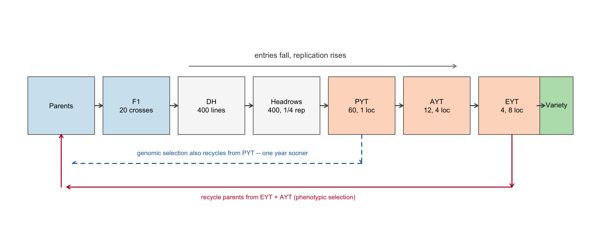
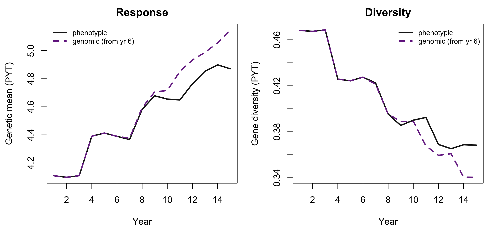

8 A complete plant breeding programme, and what it costs in diversity
Chapter 7 assembled AlphaSimR’s primitives into a hybrid scheme: two heterotic pools, reciprocal testers, a commercial cross at the end. This chapter assembles the same primitives into the other kind of programme – an inbred-line pipeline, where the product is a variety rather than a hybrid, and where the organising problem is not which cross to sell but how many genotypes to carry through how many stages of field testing.
The scheme is the wheat programme of Gaynor et al. (2017), reduced in scale. It is worth building because it is the shape most public and many commercial line-breeding programmes actually have, and because it exposes something the hybrid chapter cannot: the trade between the number of genotypes tested and the precision with which each is measured. A breeder has a fixed number of plots. Spending them on more entries at one location or fewer entries at eight locations is the same budget spent two ways, and the staged trial is the standard compromise.
Then the chapter does what the course this scheme comes from does not: it puts the book’s diversity machinery over the result, and asks what the faster programme spends to be faster.
8.1 The scheme
Seven stages, and the logic connecting them is a single idea: at every step, entries fall and replication rises. Four hundred doubled-haploid lines are scored once, cheaply, in unreplicated headrows; sixty survive into a preliminary yield trial at one location; twelve into an advanced trial at four; four into an elite trial at eight. Selection accuracy at the last stage is high because the error variance has been divided by eight locations – not because the trait became more heritable.
That is what reps does in setPheno(), and it is the argument Chapter 7’s Step 2 flagged as the plant idiom. The configuration:
sch <- list(
n_founders = 40, n_chr = 10, n_qtl = 60, # founder genomes
n_crosses = 20, n_dh = 20, fam_max = 5, # crossing and DH production
n_pyt = 60, n_ayt = 12, n_eyt = 4, # entries per yield trial
rep_hdrw = 1/4, rep_pyt = 1, rep_ayt = 4, rep_eyt = 8, # locations per stage
var_e = 0.4, gs_boost = 3, n_burn = 7, n_years = 15
)rep_hdrw = 1/4 is the course’s device for a stage less precise than a single plot: headrows are scored visually on a short row, which carries less information than one replicated plot, so the error variance is multiplied by four. fam_max caps how many DH lines any one cross may contribute to the preliminary trial – selectWithinFam() from Chapter 7’s Step 6, holding the genetic base open against a truncation that would otherwise take the whole trial from the two best crosses.
8.2 Why a breeding programme needs a burn-in
The loop below advances every stage by one year, simultaneously. That only means something if all seven stages are already occupied, by cohorts of different ages: this year’s elite trial entered the programme six years ago, this year’s headrows entered last year. Starting the loop from an empty programme would compare a year-1 elite trial that does not exist against a year-1 headrow that does.
The fix is the staggered fill in the course’s vignette, and it is the most confusing seven lines in it:
for (year in 1:7) {
F1 <- randCross(Parents, n_crosses)
if (year < 7) DH <- makeDH(F1, n_dh)
if (year < 6) HDRW <- setPheno(DH, reps = rep_hdrw)
if (year < 5) PYT <- ...
if (year < 4) AYT <- ...
if (year < 3) EYT <- ...
}Read it as a triangle rather than a loop. On the first pass every stage runs, so every stage holds a cohort. On the second pass the elite trial is skipped, so the cohort sitting in it is a year older than the one behind it. By the seventh pass only the crossing block still runs. What comes out is a programme in which each stage holds a cohort of the right age relative to its neighbours – a steady state, which is the only state in which a per-year genetic gain is a meaningful number.
8.3 One programme, fifteen years
The whole scheme is one function. It is written out rather than packaged because the loop is the thing being taught, and because a reader adapting it to their own programme will edit the loop, not call it.
gd_of <- function(pop, SP)
1 - mean(molecular_coancestry(pullSegSiteGeno(pop, simParam = SP) / 2))
run_programme <- function(cfg, seed, genomic = FALSE, gs_from = 1) {
set.seed(seed)
fg <- quickHaplo(nInd = cfg$n_founders, nChr = cfg$n_chr,
segSites = cfg$n_qtl, inbred = TRUE)
SP <- SimParam$new(fg)
SP$addTraitAG(nQtlPerChr = cfg$n_qtl, mean = 4, var = 0.1, varGxE = 0.2)
ph <- function(p, r) setPheno(p, varE = cfg$var_e, reps = r, simParam = SP)
# --- burn-in: fill every stage with a cohort of the right age ---
Parents <- newPop(fg, simParam = SP)
for (year in 1:cfg$n_burn) {
F1 <- randCross(Parents, cfg$n_crosses, simParam = SP)
if (year < 7) DH <- makeDH(F1, cfg$n_dh, simParam = SP)
if (year < 6) HDRW <- ph(DH, cfg$rep_hdrw)
if (year < 5) {
PYT <- selectWithinFam(HDRW, nInd = cfg$fam_max, use = "pheno", simParam = SP)
PYT <- ph(selectInd(PYT, nInd = cfg$n_pyt, use = "pheno", simParam = SP),
cfg$rep_pyt)
}
if (year < 4)
AYT <- ph(selectInd(PYT, nInd = cfg$n_ayt, use = "pheno", simParam = SP),
cfg$rep_ayt)
if (year < 3)
EYT <- ph(selectInd(AYT, nInd = cfg$n_eyt, use = "pheno", simParam = SP),
cfg$rep_eyt)
}
# --- advancing years, last stage first so each reads the previous cohort ---
out <- data.frame(year = 1:cfg$n_years, meanG = NA_real_, varG = NA_real_,
acc_pyt = NA_real_, gd_pyt = NA_real_, gd_parents = NA_real_)
for (year in 1:cfg$n_years) {
gs <- genomic && year >= gs_from
Variety <- selectInd(EYT, nInd = 1, use = "pheno", simParam = SP)
EYT <- ph(selectInd(AYT, nInd = cfg$n_eyt, use = "pheno", simParam = SP),
cfg$rep_eyt)
if (gs) { # lever 1: a more accurate criterion at the PYT stage
PYT@ebv <- setPheno(PYT, varE = cfg$var_e,
reps = cfg$rep_pyt * cfg$gs_boost,
onlyPheno = TRUE, simParam = SP)
AYT <- ph(selectInd(PYT, nInd = cfg$n_ayt, use = "ebv", simParam = SP),
cfg$rep_ayt)
} else {
AYT <- ph(selectInd(PYT, nInd = cfg$n_ayt, use = "pheno", simParam = SP),
cfg$rep_ayt)
}
PYT <- selectWithinFam(HDRW, nInd = cfg$fam_max, use = "pheno", simParam = SP)
PYT <- ph(selectInd(PYT, nInd = cfg$n_pyt, use = "pheno", simParam = SP),
cfg$rep_pyt)
HDRW <- ph(DH, cfg$rep_hdrw)
DH <- makeDH(F1, cfg$n_dh, simParam = SP)
if (gs) { # lever 2: recycle parents a year earlier, from the PYT
PYT@ebv <- setPheno(PYT, varE = cfg$var_e,
reps = cfg$rep_pyt * cfg$gs_boost,
onlyPheno = TRUE, simParam = SP)
EYT@ebv <- pheno(EYT); AYT@ebv <- pheno(AYT)
Parents <- selectInd(c(EYT, AYT, PYT), nInd = cfg$n_eyt + cfg$n_ayt,
use = "ebv", simParam = SP)
} else {
Parents <- c(EYT, AYT)
}
F1 <- randCross(Parents, cfg$n_crosses, simParam = SP)
out$meanG[year] <- meanG(PYT)
out$varG[year] <- varG(PYT)
out$acc_pyt[year] <- stats::cor(PYT@gv[, 1], PYT@pheno[, 1])
out$gd_pyt[year] <- gd_of(PYT, SP)
out$gd_parents[year] <- gd_of(Parents, SP)
}
out
}Two details are worth pausing on.
The advancing loop runs backwards. The elite trial is filled before the advanced trial is refilled, which is before the preliminary trial is refilled. Written in the other order, EYT would be selected from an AYT that had already been overwritten with this year’s cohort, and the programme would advance two stages per year without anyone noticing. Ordering is the whole correctness argument of a staged simulation.
Progress is reported at the PYT. It is the first stage with a yield phenotype and the last with enough entries for a variance to mean anything – meanG on four elite lines is noise. This is the course’s choice and it is the right one.
ps <- run_programme(sch, seed = 1, genomic = FALSE)
fmt(ps[c(1, 5, 10, 15), ])| year | meanG | varG | acc_pyt | gd_pyt | gd_parents | |
|---|---|---|---|---|---|---|
| 1 | 1 | 4.1209 | 0.1227 | 0.4863 | 0.4647 | 0.4353 |
| 5 | 5 | 4.6397 | 0.0868 | 0.1795 | 0.3985 | 0.4018 |
| 10 | 10 | 4.9367 | 0.0772 | 0.4830 | 0.3899 | 0.3644 |
| 15 | 15 | 5.0549 | 0.1296 | 0.4062 | 0.3778 | 0.3524 |
Genetic mean rises, genetic variance falls, and gene diversity of the preliminary trial falls with it. Nothing here is surprising; what matters is that all three are now being measured on the same run.
NoteThese numbers are reproducible
The founders come from quickHaplo(), which is seeded by set.seed(), so run_programme(sch, seed = 1) returns the same data frame every time – unlike Chapter 7’s Step 8, whose runMacs2() founders are not reproducible. That is what makes the paired comparison below legitimate: the phenotypic and genomic arms are run from the same seed, so they share founders, and every difference between them is attributable to the scheme.
8.4 Genomic selection: two levers, not one
Genomic selection is usually described as buying accuracy. It buys two things, and the second is normally the larger (Gaynor et al. (2017); Meuwissen et al. (2001)):
- Accuracy earlier in the cycle. A prediction is available on a line that has been genotyped but barely phenotyped, so the advance from preliminary to advanced trial can be made on better information than one location’s yield.
- A shorter generation interval. Parents can be recycled from the preliminary trial instead of waiting for the elite trial – and the breeder’s equation of Chapter 3 is a rate per unit time, so cutting years off the cycle raises gain per year even at unchanged accuracy per selection.
This chapter mimics the prediction rather than fitting one: ebv is filled with a phenotype simulated at gs_boost times the replication, which is a stand-in for a genomic prediction of the corresponding accuracy. Chapter 14 is where the book actually fits prediction models and measures what accuracy is attainable; the honest statement here is that this chapter assumes an accuracy and studies its consequences, rather than earning it.
gs <- run_programme(sch, seed = 1, genomic = TRUE, gs_from = 6)
fmt(gs[c(1, 5, 10, 15), ])| year | meanG | varG | acc_pyt | gd_pyt | gd_parents | |
|---|---|---|---|---|---|---|
| 1 | 1 | 4.1209 | 0.1227 | 0.4863 | 0.4647 | 0.4353 |
| 5 | 5 | 4.6397 | 0.0868 | 0.1795 | 0.3985 | 0.4018 |
| 10 | 10 | 4.9378 | 0.0663 | 0.3026 | 0.3969 | 0.3517 |
| 15 | 15 | 5.5676 | 0.0686 | 0.4497 | 0.3148 | 0.3038 |
Years 1 to 5 are identical to the phenotypic arm, digit for digit, because genomic selection only switches on in year 6. That is a matched control in the sense Chapter 20 uses the term: the two arms share a history, so the comparison is paired rather than between two independent runs.
8.5 The comparison, replicated
One run of one seed is an anecdote. Both arms are cheap enough to replicate.
seeds <- 1:24
reps <- do.call(rbind, lapply(seeds, function(s) {
a <- run_programme(sch, s, genomic = FALSE)
b <- run_programme(sch, s, genomic = TRUE, gs_from = 6)
rate <- function(d) stats::coef(stats::lm(meanG ~ year,
data = d[d$year >= 6, ]))[2]
data.frame(seed = s,
gain_ps = rate(a), gain_gs = rate(b),
gd_ps = a$gd_pyt[nrow(a)], gd_gs = b$gd_pyt[nrow(b)],
end_ps = a$meanG[nrow(a)], end_gs = b$meanG[nrow(b)])
}))
paired <- function(x, y) {
d <- y - x
c(mean_difference = mean(d), t = mean(d) / (stats::sd(d) / sqrt(length(d))))
}
fmt(rbind(`gain per year` = paired(reps$gain_ps, reps$gain_gs),
`gene diversity, yr 15` = paired(reps$gd_ps, reps$gd_gs),
`genetic mean, yr 15` = paired(reps$end_ps, reps$end_gs)))| mean_difference | t | |
|---|---|---|
| gain per year | 0.0285 | 8.0851 |
| gene diversity, yr 15 | -0.0280 | -2.8310 |
| genetic mean, yr 15 | 0.2771 | 6.0496 |

Genomic selection raises the rate of gain by roughly half, and the paired t-statistic leaves no doubt about the sign. That is the result Gaynor et al. (2017) reports and the reason two-part strategies were adopted.
The second row is the one this book exists for. Gene diversity in the preliminary trial is significantly lower under genomic selection at year 15, and it is lower for a reason that is structural rather than incidental: recycling parents from the preliminary trial means recycling them a year before the trial data could have distinguished full sibs, so the parents chosen are more closely related than the ones the phenotypic arm would have chosen. A shorter generation interval is a higher rate of coancestry accumulation per unit time, not merely per cycle.
8.6 The diversity ledger
The measurement above used gene diversity of the preliminary trial. The parent set is the population that actually transmits, and it is the one an optimal contribution scheme would act on:
ledger <- data.frame(
year = yr,
gd_pyt_ps = avg("ps", "gd_pyt"), gd_pyt_gs = avg("gs", "gd_pyt"),
gd_par_ps = avg("ps", "gd_parents"), gd_par_gs = avg("gs", "gd_parents"))
fmt(ledger[c(1, 5, 10, 15), ])| year | gd_pyt_ps | gd_pyt_gs | gd_par_ps | gd_par_gs | |
|---|---|---|---|---|---|
| 1 | 1 | 0.4681 | 0.4681 | 0.4418 | 0.4418 |
| 5 | 5 | 0.4243 | 0.4243 | 0.4158 | 0.4158 |
| 10 | 10 | 0.3901 | 0.3891 | 0.3812 | 0.3758 |
| 15 | 15 | 0.3684 | 0.3404 | 0.3628 | 0.3327 |
loss <- function(v) (ledger[[v]][1] - ledger[[v]][nrow(ledger)]) / ledger[[v]][1]
fmt(c(`PYT, phenotypic` = loss("gd_pyt_ps"), `PYT, genomic` = loss("gd_pyt_gs"),
`parents, phenotypic` = loss("gd_par_ps"), `parents, genomic` = loss("gd_par_gs")))
#> PYT, phenotypic PYT, genomic parents, phenotypic parents, genomic
#> 0.2131 0.2729 0.1788 0.2470Those four numbers are exactly the quantity this book calls alpha: the proportional loss of gene diversity, here measured against the programme’s own starting point rather than against a random-selection baseline of the same size (Section 11.9 is where that distinction is made, and it matters – a same-size random baseline would attribute part of this loss to drift rather than to selection).
NoteStatus number, and why it is not the headline here
status_number() on a set of fully inbred lines returns a value near or below 1, because a homozygous line has self-coancestry f_ii = 1 and the diagonal dominates the mean. That is the same arithmetic Chapter 5 explains for a biparental cross, and it is correct rather than broken – but it makes N_s an unhelpful headline for a line-breeding programme. Gene diversity is the metric that stays interpretable across both inbred and outbred populations, which is why the ledger is written in it.
What would an alpha budget mean here? Not a constraint on which hybrids to sell, as in Chapter 16, but a constraint on which parents to recycle: the same optimal-contribution problem of Chapter 15, applied to the c(EYT, AYT, PYT) candidate set that the genomic arm selects from. The candidate set is small, the coancestry matrix is cheap, and the choice being constrained is annual. Chapter 19 is the argument for why that constraint pays back, and Chapter 20 is where the payback is predicted rather than observed.
8.7 Assumptions
What this models. Staged testing with replication rising across stages, genotype-by-environment interaction as a variance component (SP$addTraitAG(varGxE = )), doubled-haploid line development, within-family caps, a steady-state programme reached through a burn-in, and two distinct genomic-selection levers separated so their effects can be told apart.
What it does not. Genomic prediction is mimicked by adding replication, not fitted – so the accuracy is assumed rather than earned, and the training population, its size, and its relationship to the selection candidates play no role (Chapter 14 is where they do). There is one trait, so the index questions of Chapter 7’s Step 7 do not arise. Locations differ only through a variance component: there is no correlated environment structure, no year effect, and no location-by-year term, so a “location” here is an independent draw rather than a place. Doubled-haploid production is instantaneous and never fails. Founders come from quickHaplo(), so they carry no linkage disequilibrium – Chapter 7’s Step 1 measures what that costs and argues it is the right trade for a chapter about response rather than about marker-QTL association.
Scale. 40 founders, 600 loci, 15 years, 24 paired seeds, all live at render. Gaynor et al. (2017)’s programme is an order of magnitude larger in every dimension; the qualitative results here are the ones that survive the reduction, and the absolute rates are not comparable to a real wheat programme.
8.8 Where this connects
Chapter 7 supplies every primitive this chapter uses and builds them into the hybrid scheme instead; the two chapters are the same toolkit pointed at the two kinds of programme. Chapter 3 is where the breeder’s equation says why a shorter generation interval raises gain per year. Chapter 14 is where the accuracy this chapter assumes is actually measured, and Chapter 9 is where marker-versus-QTL, the reason that accuracy is finite, is taken seriously.
The diversity result belongs to the book’s spine. Chapter 19 shows the same tension – faster response, faster erosion – with the package’s own simulator over a longer horizon; Chapter 20 explains why the erosion is what bounds the programme and when it can be predicted; Chapter 15 is the machinery for spending the budget deliberately rather than discovering afterwards what was spent.